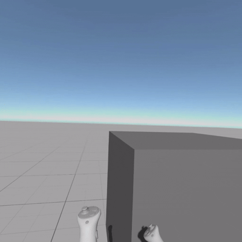
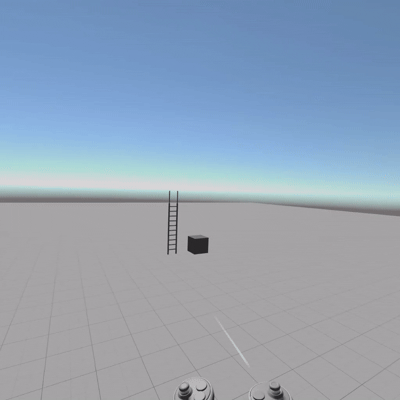
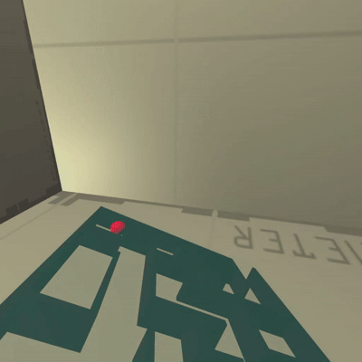
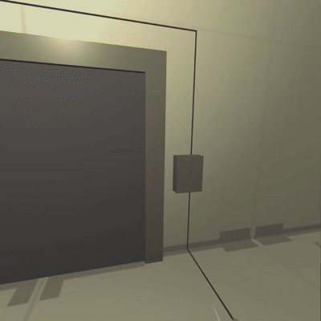
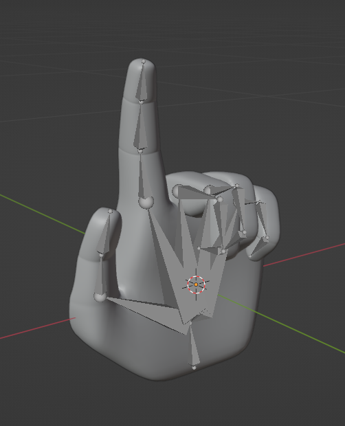
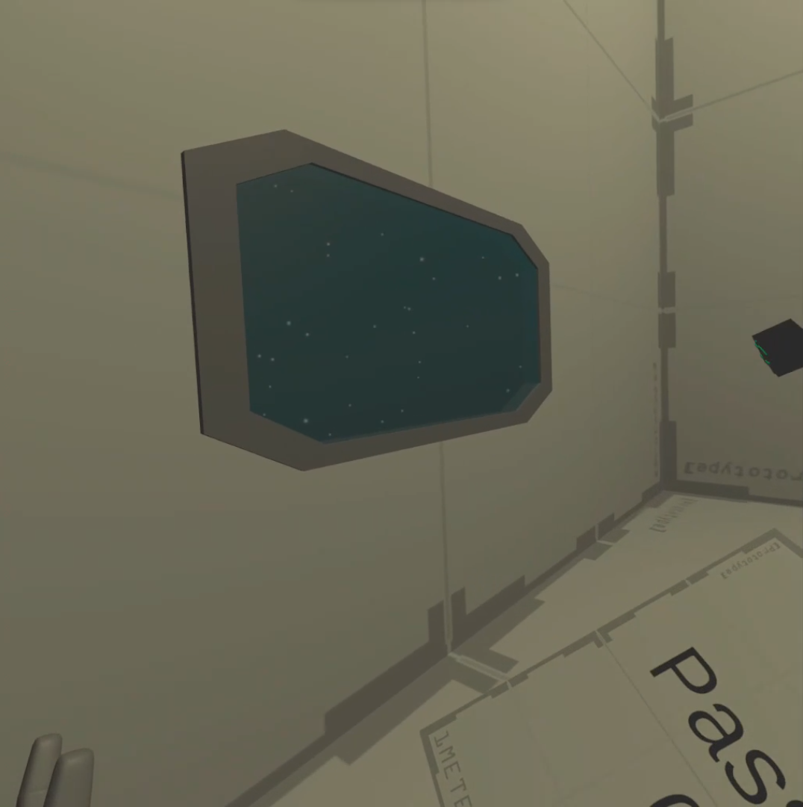
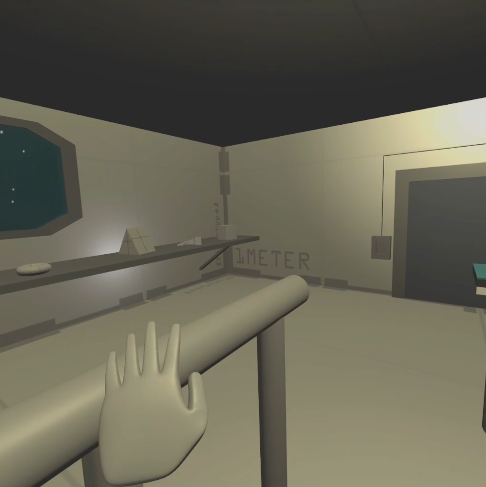

The head mounted display I used was the Meta Quest 3 . It is the latest headset of
the Meta Quest line.Lenovo Legion 5 . It is fitted with an Nvidia
RTX 3050Ti Laptop GPU, and an AMD Ryzen 7 6800H CPU.Unity Game Engine with the XR Interaction Toolkit.
The Unity version I used is 6000.0.30f1 and I used the VR Template as my starting point.Blender .
Locomotion

Fig 1a. Zero-gravity grab movement

Fig 1b. Hand thrusters
The movement system I used was not any of the default ones provided by the toolkit. Instead, I programmed
my own custom movement script. The mechanics are highly inspired by
Lone Echo , a game that
takes place in space. The player grabs walls or obstacles to drag themselves in a zero-gravity enviroment
as seen from Fig 1a. I also implemented snap-turning for accessibility.hand thruster movement as seen from Fig 1b. The player can press
the primary button of either controller to gain acceleration in the direction of the controller. If both hands are
trying to add thrust, then the accelerations are added together. The player is also clamped with a maximum velocity.
Furthermore if the user wants to slow down, the thumb stick of either controller can be pressed for a deceleration
on the move direction.
Cube Puzzle
The first puzzle I created for the escape room is a cube puzzle. The player must find cubes throughout
the room to and arrange the cubes in the frame in a way that connects the green lines together. I used a grid
of Socket Interactables inside the frame to allow the player to precisely place the cubes in a grid.
Completing it will give a key item important for escaping.
Maze Puzzle

The second puzzle I made was a ball maze puzzle. The player must tilt the puzzle to guide the ball out
of the maze to retrieve the ball which is important for escaping. However, since the enviroment is zero-gravity,
there would be no gravity to push the ball out of the maze. Hence the player must enter a specific room
that has special properties that attracts the ball to the ground.
Password Puzzle
The final puzzle I created in the room is a password puzzle. The player must find a secret password somewhere in the
room then input it to the keypad. When the password is correct, the player will obtain an important item
that is required to escape the room. The buttons are pokeable interactables .
Escape Door

Once the player gets all the key items, they have to place them in their correct sockets near the door. Then, the door
will open allowing the player to escape the room.
Custom Hand Model
VIDEO
Fig 2a. Youtube Tutorial for importing model to Unity

Fig 2b. Hand model in Blender doing the point pose
After the initial prototype was done, I created my own hand model in Blender . Then, I followed the
tutorial in Fig 2a. to rig, import and animate the model in Unity.Poke Interactors are only enabled when the hands are in their
poke pose as seen in Fig 2b.
Finishing Touches

Fig 3a. Window showing stars outside

Fig 3b. Handles for user to grab
For the finishing touches, I set the background to be a solid black colour so that it looks more like space.
Then using the Particle System , I created starts. Finally, I created windows as seen from
Fig 3a. So the player can see the stars.
Since the room seem a little empty with a limited number of obstacles for the users to grab onto, I created
handles as seen from Fig 3b.
Final Product
To watch a video of the final product, you can click this link .click this link .